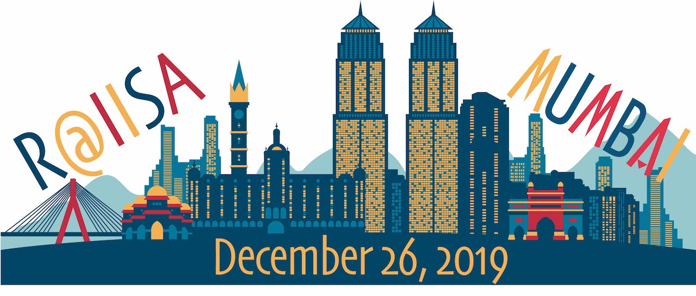
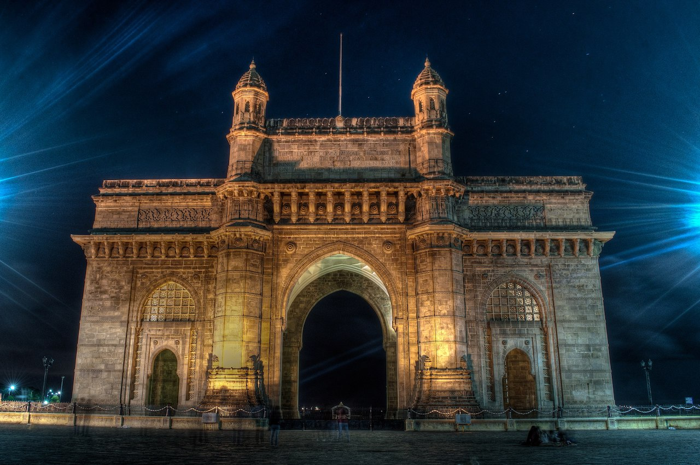
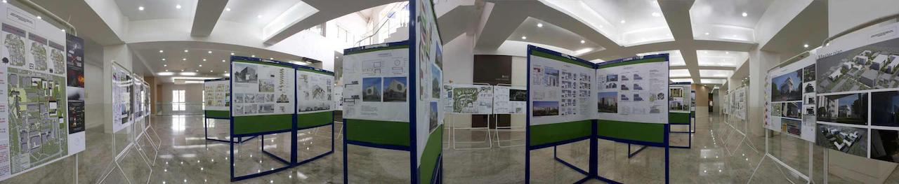
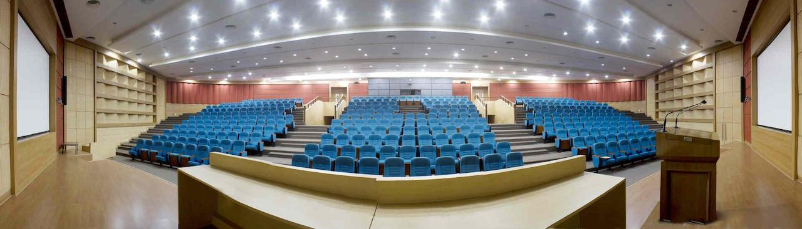
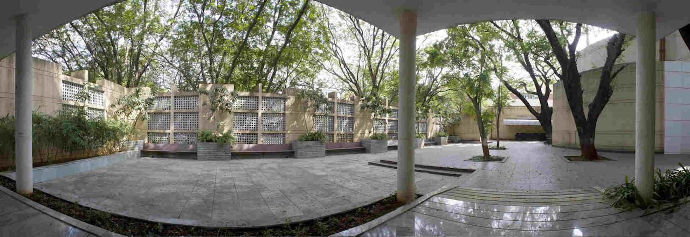

Welcome
Welcome to the website for the R conference at the annual International Indian Statistical Association conference to be held on Thursday, December 26, in Mumbai, India. The conference seeks to bring together R users and data scientists from academia and industry to discuss and showcase applications of R in education, research and elsewhere. It is hoped that this will be a first in a series of large conferences involving R and data science, all over India and its vicinity. A major goal of the conference is to make it feasible for R users in the region to attend an International conference with top speakers and a world-class program. We want to provide a face-to-face welcome into the international R community to as many people as possible from all backgrounds and circumstances. We are committed to producing a conference that reflects the great diversity of the R Community. Thanks to our sponsors, we are able to provide some student scholarships for attendees from India and neighboring countries. If you are a potential sponsor, please help us extend our reach (details on the sponsors page).Who should attend?
The only requirement to benefit from this conference is that partcipants have familiarity with R and its package ecosystem. We welcome R users with all levels of expertise from basic to advanced from academia and industry. Beginners will be able to gain an understanding of the power R and see a wide range of applications. Advanced users will have the opportunity to present talks by submitting abstracts and posters. All users will benefit from the tutorials.

Conference Venue
The conference will be held in the Victor Menezes Convention Center on the campus of the Indian Institute of Technology, Mumbai.Travel/Lodging
Please navigate to the "conference details" section of the IISA conference website. Gateway of India image under cc-by-sa 3.0: Credits{kind=link}

Program
This conference will be a a day-long, single-track event.Invited Speakers
- Susan Holmes, Professor of Statistics, Stanford University.
- Martin Morgan, Research Professor, Biostatistics, SUNY, Buffalo and Director of the Bioconductor project.
| Time | Event | Details |
|---|---|---|
| 08:30 | Check in | |
| 09:00 - 11:00 | Invited tutorial | R Packages for Communicating Reproducible Research Martin Morgan This tutorial is for all who wish to write R packages. R is a fantastic language for you to develop new statistical approaches for the analysis and comprehension of real-world data. R packages provide a way to capture your new approach in a reproducible, documented unit. An R package is surprisingly easy to create, and creating an R package has many benefits. In this tutorial we create an R package. We start with a data set and a simple script transforming the data in a useful way; perhaps you have your own data set and script? We replace the script with a function, and place the function and data into an R package. We then add documentation, so that our users (and our future selves) understand what the function does and how the function applies to new data sets. With an R package in hand, we can tackle more advance challenges: vignettes for rich narrative description of the package; unit tests to make our package more robust; and version control to document how we change the package. The final step in the development of our package is to share it with others, through github, through CRAN, or though domain-specific channels such as Bioconductor. |
| 11:00 - 11:15 | Break | |
| 11:15 - 12:15 | Contributed talks | |
| 12:15 - 13:30 | Break | Posters readied |
| 13:30 - 14:30 | Invited talk | Hidden variables: latent structure in bacterial communities in the human microbiome Susan Holmes The analyses of complex biological systems often results in output that may seem just as complex, with little useful knowledge extracted as a result of the multiple layers of information. Analogies with methods in textual analyses (Natural Language Processing) such as the use of latent variables methods provides useful interpretations as shown by Sankaran and Holmes, 2018. The use of multi-scale strategies is providing useful predictions of preterm birth and a deeper understanding of resilience of the human microbiome after antibiotic perturbations. Our team has shown that Bayesian and Bootstrap approaches can provide nonparametric answers to the statistical challenges and have supplemented these with effective uncertainty visualization techniques distributed as Bioconductor/R packages (phyloseq, adaptiveGPCA, treelapse, bootLong). This presentation will include joint work with Kris Sankaran, Julia Fukuyama, Ben Callahan, Claire Donnat, Joey McMurdie, Pratheepa Jeganathan, Lan Huong Nguyen and David Relman's group at Stanford. |
| 14:30 - 14:45 | Break | |
| 14:45 - 16:45 | Contributed talks | |
| 16:45 - 17:30 | Poster Session |

Registration Details
The registration is done through the INDSTATS 2019 conference website which allows for registering either for the main conference or only for the R@IISA pre-conference. During registration, you will be asked to agree to the code of conduct.Abstract Submission
We invite you to submit abstracts for talks and/or posters for the R@IISA pre-conference (as opposed to the main conference) by July 31, 2019. Follow these steps, in order, to submit an abstract for a contributed talk.- If you have not already done so, register for the R conference using the INDSTATS 2019 conference website using your email address and pay the registration fee.
- Use the same email id to fill out this abstract submission form. Since this is an R conference, your abstract for a talk/poster should discuss either your own R package, or use of R and other packages in order to be viewed favorably. For good examples, look at the abstracts submitted for the useR! 2019 abstracts. Purely methodological and statistical talks are more appropriate for the main conference.
Scholarships
Thanks to our sponsors, we hope to provide between 40 and 50 scholarships for deserving participants from around India and neighboring countries. We encourage applicants to present a poster or talk abstract for this R conference (using the abstract submission form above, not the one for the main conference) to improve their chances of getting a scholarship. Follow these steps, in order, to apply.- If you have not already done so, register for the R conference using the INDSTATS 2019 conference website using your email address and pay the registration fee.
- Use the same email id to apply for a scholarship using this form.
- Awardees will be notified by the program committee and an award amount will be specified.
- The scholarship will be paid after the conference.
- The amount refunded will depend on proof of expense: train or plane tickets, lodging bills, etc.
- The amount reimbursed will not exceed the awarded amount.
- The registration fee will be refunded as part of the award.
